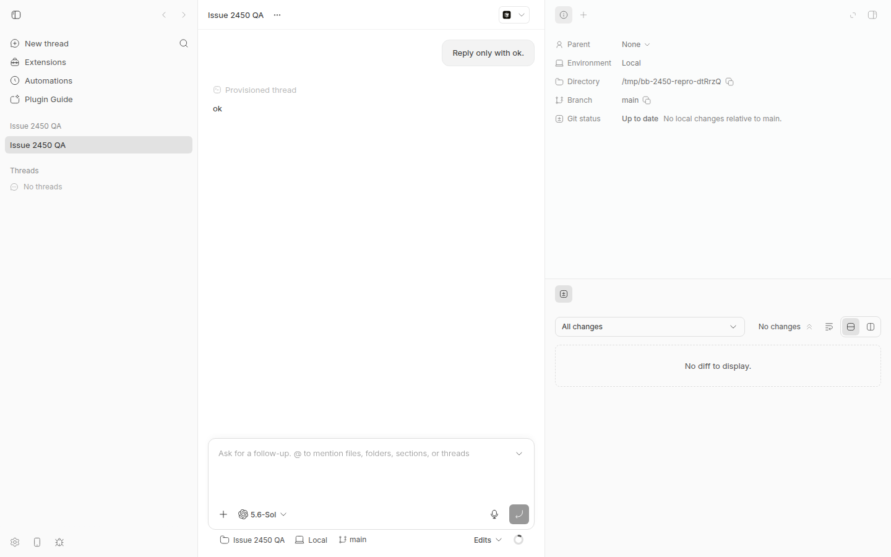

#2450 · Split right-panel panes have no close action when their only tab is fixed
Verdict: REPRODUCED · Root-cause confidence: high
1. TL;DR
A user can put the fixed Info and Diff tabs in separate right-panel panes. Neither pane then has a direct remove action. The fixed tabs also have no tab-close action. The layout has no transition that removes a nonempty pane and keeps its tabs.
The browser reproduction showed two panes and zero direct pane controls. PR #2486 adds the required layout transition and a button for each pane.
2. Claims vs findings
| Claim from the issue | Status | Evidence |
|---|---|---|
| A user can drag Diff into a new right-panel pane. | Verified | A real pointer drag created a saved two-pane layout. The lower pane contained only Diff. |
| The split has no direct pane-close action. | Verified | The live page had two panes, zero Close pane buttons, and zero Remove split buttons. |
| Fixed tabs have no tab-close action. | Verified | The live page had zero tab-close buttons. The fixed-tab component receives select and drag actions only. |
| The only visible close-like action hides the complete right panel. | Verified | The live page had one Hide right panel button. The saved split remained in local storage. |
onRequestClose: null causes the gap. |
Verified but incomplete | This value disables the common pane action. The fixed-tab and layout contracts also have no pane-remove action. |
| A center drop into the other pane provides a workaround. | Verified | A real center drop showed Group tab here. It kept one Info tab and one Diff tab. It removed the split. The center-drop path groups the tab and removes its source pane. The empty-pane path rejects nonempty panes and removes empty panes. |
3. Environment
- bb base commit:
ad79bbb5ec909524f8f281e62d860c588a86f332. - OS: Ubuntu Linux, kernel
7.0.0-30-generic, x86-64. - Node:
v24.18.0, ABI137. - Browser: Headless Chrome
152.0.7977.64, viewport1440 × 900. - Provider used for the fixture thread: Codex CLI
0.150.1. - App:
http://localhost:13242. Server:http://localhost:21242. Host daemon:29242. - Data directory:
/home/sawyer/.bb-dev/bb-report-worktrees-bb-report-2450-revise-bnt2t7-0f0733c24d86.
4. Minimal reproduction
Prerequisites: Use Node v24.18.0 with ABI 137. Install pnpm, Git, curl, and Codex.
- Run these commands from the base checkout. They create a private app instance and a scratch repository.
test "$(node --version)" = "v24.18.0" test "$(node -p 'process.versions.modules')" = "137" pnpm install --frozen-lockfile --prefer-offline --package-import-method=copy pnpm exec turbo run build export BB_DEV_NODE_BIN_DIR="$(dirname "$(command -v node)")" export npm_config_package_import_method=copy scripts/bb-dev-app current eval "$(scripts/bb-dev-app env)" qa_repo=$(mktemp -d /tmp/bb-2450-repro-XXXXXX) git -C "$qa_repo" init -q git -C "$qa_repo" config user.name "Issue 2450 QA" git -C "$qa_repo" config user.email "qa@example.invalid" git -C "$qa_repo" commit --allow-empty -qm "fixture"
- Select the connected isolated host. Then create the project through the isolated server.
machine_json=$(node packages/scripts/dist/commands/run-cli.js machine list --json) host_id=$(printf '%s' "$machine_json" | node -e ' let s=""; process.stdin.on("data", d => s += d).on("end", () => { const host = JSON.parse(s).find(h => h.status === "connected"); if (!host) process.exit(1); process.stdout.write(host.id); });') payload=$(node -e ' process.stdout.write(JSON.stringify({ name: "Issue 2450 QA", source: { type: "local_path", path: process.argv[1], hostId: process.argv[2] }, }));' "$qa_repo" "$host_id") project_json=$(curl -fsS -X POST "$BB_SERVER_URL/api/v1/projects" \ -H 'content-type: application/json' --data "$payload") project_id=$(printf '%s' "$project_json" | node -e ' let s=""; process.stdin.on("data", d => s += d).on("end", () => { process.stdout.write(JSON.parse(s).id); });') - Create the fixture thread. Wait for it. Then print its local URL.
thread_json=$(node packages/scripts/dist/commands/run-cli.js thread spawn \ --project "$project_id" --environment "$qa_repo" --provider codex \ --permission-mode accept-edits --title "Issue 2450 QA" \ --prompt "Reply only with ok." --json) thread_id=$(printf '%s' "$thread_json" | node -e ' let s=""; process.stdin.on("data", d => s += d).on("end", () => { process.stdout.write(JSON.parse(s).id); });') node packages/scripts/dist/commands/run-cli.js thread wait "$thread_id" \ --status idle --timeout 120000 app_url=$(scripts/bb-dev-app status | sed -n 's/^App: //p') printf '%s/projects/%s/threads/%s\n' "$app_url" "$project_id" "$thread_id"The run printed
Thread thr_pzp45wdan7 reached status idle.It printed a URL underhttp://localhost:13242. - Open the printed URL. Then open the right panel if the app hides it.
- Drag the fixed Diff tab into the panel body.
- Release the tab on the
Split bottomtarget. - Inspect the visible controls or run this browser-console check.
({ panes: document.querySelectorAll('[data-split-pane-id]').length, closePane: document.querySelectorAll('[aria-label="Close pane"]').length, removeSplit: document.querySelectorAll('[aria-label="Remove split"]').length, tabClose: document.querySelectorAll('[aria-label^="Close "]').length, hidePanel: document.querySelectorAll('[aria-label^="Hide right panel"]').length, })
Expected:
{ panes: 2, removeSplit: 2 }
Actual:
{ panes: 2, closePane: 0, removeSplit: 0, tabClose: 0, hidePanel: 1 }

Regression test
The test saves a fixed-tab split. It then requires one direct action for each pane.
expect(document.querySelectorAll("[data-split-pane-id]")).toHaveLength(2);
expect(
screen.getAllByRole("button", { name: "Remove split" }),
).toHaveLength(2);
Copy the report artifact into the checkout. Then run it from apps/app.
cp /home/sawyer/.bb/reports-work/issues/2450/repro/issue2450.repro.test.tsx \ apps/app/src/components/secondary-panel/issue2450.repro.test.tsx cd apps/app pnpm exec vitest run src/components/secondary-panel/issue2450.repro.test.tsx
Base result:
Test Files 1 failed (1) Tests 1 failed (1) Unable to find an accessible element with the role "button" and name "Remove split" src/components/secondary-panel/issue2450.repro.test.tsx:94:14 exit_code=1
Repro files: test, base log, and browser checks.
5. Root cause
The split feature added pane creation, tab movement, and empty-pane cleanup. It did not add a direct nonempty-pane removal action.
Fixed tabs receive select and drag actions only. They receive no close action in ThreadSecondaryPanel.tsx.
Each split pane also sets onRequestClose to null in SidebarSplitContainer.tsx.
The layout can remove a pane only after its group becomes empty. The guard rejects all nonempty groups in sidebarSplitLayout.ts.
A fixed-only pane never becomes empty through the user interface. Therefore, the three contract choices create the dead end.
6. Proposed fix (first principles)
- Add a layout action that removes one pane without closing its tabs.
- Move each removed tab into the focused survivor.
- Keep the removed pane selection when the removed pane had focus.
- Keep the survivor selection when another pane had focus.
- Show one keyboard-focusable
Remove splitbutton for each pane only when a split exists. - Keep the fixed Info and Diff tab rules unchanged.
This is an app-only state change. It does not change a server or host-daemon message. It needs no protocol-version increase.
7. PR review
#2486 · Fix right-panel split removal and drop bounds
Verdict: MERGE. The PR fixes the root cause and keeps fixed-tab behavior unchanged.
Root-cause coverage: The PR adds removeSidebarSplit. This action keeps every tab and updates focus explicitly.
It passes the action to each split pane. It shows no action after the layout returns to one pane.
State safety: A click does not call any tab-close callback. The browser kept one Info tab and one Diff tab.
The saved split entry disappeared after the click. The layout returned to its standard one-pane state.
Additional drag-bound change: The PR limits right-panel tab targets to their owning aside.
The tests cover an accepted inner target and a rejected outer target. I found no target regression.
Base compatibility: The PR branch starts 16 commits behind the report base.
The relevant base files did not change in that range. A trial merge had no conflict.
Validation: The regression test failed on the base and passed on the PR.
The exact base-plus-PR merge passed 52 focused tests. The app typecheck passed.
The app lint had zero errors and 181 existing warnings.
CI note: One package job timed out in an unrelated Plugin API inventory test.
The report base includes the later contention fix from commit 06394456a. The exact merge validation passed.
Detailed evidence: PR regression log, merged validation log, and PR data.
8. Related issues
- #1841 added the right-panel split feature. It did not specify a direct pane-remove action.
- #1337 concerns moves from the sidebar into the main view. It does not cover this control gap.
9. Appendix
- All principal commands
- Raw issue data
- Regression test source
- Base regression test log
- PR regression test log
- PR merged validation log
- Browser state checks
- Screenshot PNG
{kind=link}
Verification
The verifier found that the old browser steps lacked a fixture. The old test command also lacked the linked file.
This revision created a scratch Git repository, a project, and a Codex thread in a fresh isolated instance. A real pointer drag reproduced the split. A second pointer drag verified the center-drop workaround.
This revision also copied the linked test into the stated source path. The exact command failed at line 94 with exit code 1.